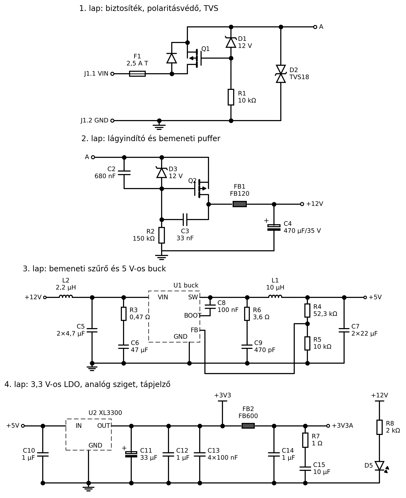
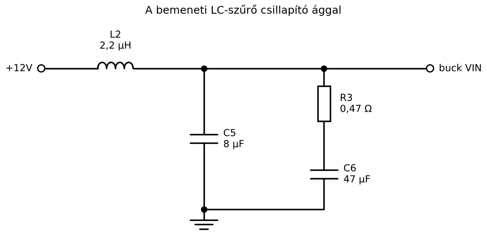
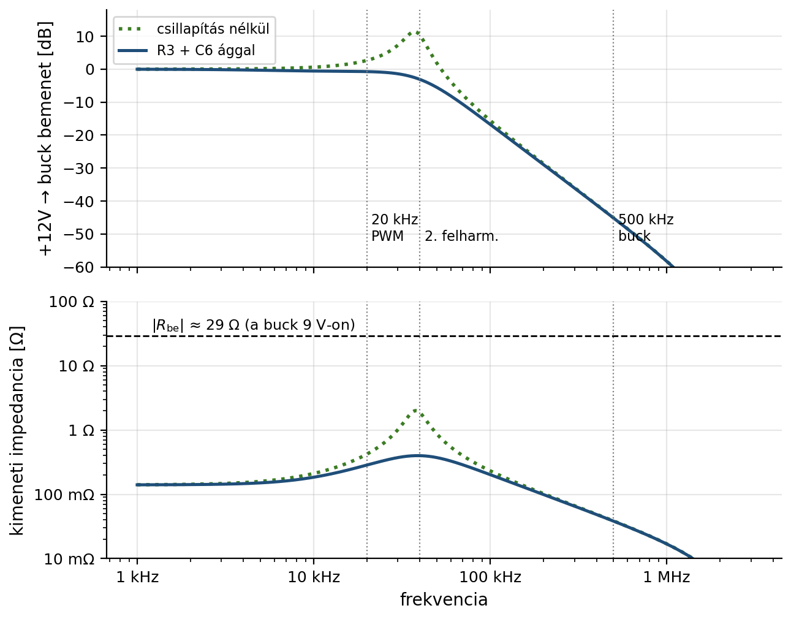
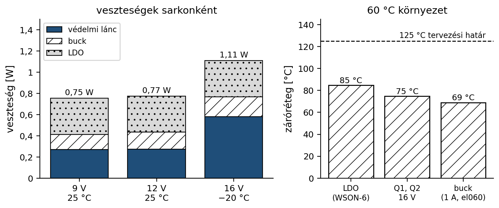

Az első záróprojektben a szenzormodul teljes tápellátását tervezed meg: a 12 V-os bemenettől a védelmi láncon át az 5 V-os és a 3,3 V-os sínig, követelménytől az átadási csomagig. A végére:
Szinte minden elemét ismered: a védelmet a Tápbemeneti védelmek: biztosíték, polaritás, túlfeszültség, áramlökés, a buckot A buck konverter és a Hatásfok, veszteségek, alkatrészválasztás és kapcsolóüzemű zaj, az LDO-t a Teljesítménymérleg, lineáris szabályzó és LDO, a hidegítést a Tápintegritás és hidegítés alfejezetből. A folyamat és a dokumentumok formája a Követelményektől a blokkdiagramig, a Kapcsolási rajz konvenciói és a NYÁK-tervezőnek átadott kényszerek, a Szimuláció és ellenőrzés és a Tervezési átvizsgálás és átadás a NYÁK-tervezésnek szerint alakul. Minden alkatrészadat mintaadat.
Külön-külön minden blokk működött: a védelmi lánc elviselte a tesztimpulzust, a buck hullámossága néhány millivolt volt, az LDO nem melegedett túl. Egy tápegység hibái mégis a blokkok határán születnek. A ferritgyöngy, amelyet a zaj ellen választottál, elbírja-e a szolenoid áramát is? A visszacsatoló osztó tűrése hagy-e helyet a terhelésugrásnak? Észreveszi-e a lassan nyitó lágyindító, ha a buck hirtelen áramot kezd húzni? Ezekre csak a teljes rajz, egyben vizsgálva válaszol.

Az energia balról jobbra, lapról lapra halad:
A földek (PGND, AGND, GND) a J1.2-nél, az NT1 csillagpontban találkoznak (Földelési stratégiák és visszatérő áramutak); a rajzon a közös földjel ezt a pontot jelöli. A rajzi jelölők ebben a projektben egységesek; a D4 jelet a terhelés szabadonfutó diódájának tartjuk fenn.
A modul listájából (Követelményektől a blokkdiagramig) hét tétel a tápegységre vonatkozik, és a projekt öt sajátot ad hozzá (TP = táp-projekt):
| Jel | Mit kér | Elfogadási feltétel |
|---|---|---|
| K-04 | bemenet | 9…16 V; az áram a biztosíték 75 %-os határa alatt |
| K-05 | fordított polaritás | −16 V tetszőleges ideig, károsodás nélkül |
| K-06 | tesztimpulzus | 30 V, 1 ms, 2 Ω: nincs károsodás |
| K-07, K-08 | sínek | +5V: 0…0,5 A, ≤ 50 mVpp; +3V3: 3,3 V ±3 %, ≤ 0,2 A |
| K-11, K-17 | hő, nyugalom | −20…60 °C, T_J 25 K tartalékkal; nyugalomban ≤ 1,5 W |
| TP-01 | áramlökés | bekapcsoláskor legfeljebb 2,5 A |
| TP-02 | +5V terhelésugrásnál | 0,1 → 0,5 A: 4,85…5,15 V, legrosszabb esetben |
| TP-03 | bemeneti szűrő | legfeljebb +3 dB csúcs, 500 kHz-en legalább 30 dB |
| TP-04 | indulás | 9…16 V-on a buck nem indul újra |
| TP-05 | a lágyindító kapcsoló | 16 V-on, melegen (75 °C-ról) újraindítva: SOA-kihasználtság ≤ 80 %, ≤ 125 °C |
A lánc a Tápbemeneti védelmek: biztosíték, polaritás, túlfeszültség, áramlökés méretezését követi: lomha F1 2,5 A, Q1 és Q2 MP1 p-MOSFET (garantált : 10 V-on 55 mΩ, 4,5 V-on 85 mΩ), TVS18, lágyindítás 33 nF Miller- és 680 nF gate–source kondenzátorral, 470 µF/35 V puffer. A lágyindító gate-ellenállása viszont R2 = 150 kΩ a bevezető méretezés 100 kΩ-ja helyett: ennek okát (TP-D4) a 7. pont mutatja meg.
Az F1-en és a láncon a teljes bemeneti áram folyik, a szolenoidé is. A legnagyobb a hideg, 16 V-os sarokban (a tekercsek ellenállása −20 °C-on kisebb): 1,846 A, éppen a A alatt. A láncon a veszteség , ahol az F1 (30 mΩ), Q1, Q2 és FB1 soros ellenállása: 16 V-on Ω, a veszteség 0,58 W, az esés 0,31 V.
Itt a projekt első hibája. A Tápbemeneti védelmek: biztosíték, polaritás, túlfeszültség, áramlökés láncában a ferritgyöngy neve nem volt rögzítve; a zajfejezetekből ismert FB600 névleges árama 2 A. %, a mintairányelv ferritre 70 %-ot enged. A javítás az FB120 (3 A, 30 mΩ): 62 %. A zajszűrést nem ez a gyöngy végzi (azt a buck előtt az L2 veszi át), így a kisebb impedancia elfogadható. Ez a TP-D1 döntés.
A buck a bemenetéről szaggatott áramot vesz fel; a C5 (2×4,7 µF/50 V, 12 V-on tényleg 8,0 µF) ennek nagy részét helyben adja, az L2 pedig a maradékot tartja távol a +12V síntől (Zajszűrés: RC, LC, ferrit, közös módusú fojtó, árnyékolás).

A sajátfrekvencia és a hullámimpedancia (Rezonancia, jóság és sávszűrők):
Szavakkal: környékén a szűrő nem gyengít, hanem erősít, és ez éppen a terhelés 20 kHz-es PWM-jének második felharmonikusa (40 kHz) mellett van. A csillapító ág a már ismert recept: és legalább négyszer (TP-D3 döntés).

Csillapítás nélkül a csúcs 11,4 dB, 40 kHz-en +10 dB; a csillapító ággal sehol nem erősít (40 kHz-en −3 dB), 500 kHz-en mindkét változat 45 dB-t gyengít.
Van egy második feltétel is. A buck állandó teljesítményt vesz fel: ha a bemenete csökken, többet húz. Kis változásokra ezért úgy viselkedik, mint egy negatív ellenállás:
Definíció. A kapcsolóüzemű átalakító bemeneti kisjelű ellenállása állandó teljesítménynél .
Az előtte lévő szűrő csak akkor marad biztosan stabil, ha a kimeneti impedanciájának csúcsa jóval kisebb -nél (ez a szakirodalomban Middlebrook-feltételként ismert hüvelykujjszabály). 9 V-on W, Ω; a csillapított szűrő csúcsa 0,40 Ω (csillapítatlanul 2,0 Ω). Dimenzió: . A feltétel nagy tartalékkal teljesül.
A buck méretezése változatlan (A buck konverter): kHz, L1 = 10 µH, C7 = 2×22 µF (5 V-on tényleg 22,9 µF), R4/R5 = 52,3 kΩ/10 kΩ, a referencia V ±1 % (mintaadat), kHz. A kimenet
A legrosszabb esetben és a két ellenállás (tűrés + 25 ppm/K hőfoktényező 45 K-en) együtt a rosszabb irányba tér el. A terhelésugrás-becslés a Hatásfok, veszteségek, alkatrészválasztás és kapcsolóüzemű zaj képlete: .
Gondolkodj előre: elég-e a szokásos 1 %-os ellenállás, ha A? Becsüld meg, mielőtt a számpéldát olvasod.
Az U2 az XL3300 WSON-6 tokban (D-02), a kimenetén a Tervezési átvizsgálás és átadás a NYÁK-tervezésnek D-06 döntése szerinti 33 µF polimer + 1 µF + 4×100 nF, a +3V3A sziget FB600 + 1 µF, csillapítva 1 Ω + 10 µF-dal. A kimeneti kapacitás 45,4 µF névleges, a 47 µF-os határ alatt.

A legmelegebb elem az LDO (84,7 °C), ahogy a Hőtervezés és vezetőmelegedés előre jelezte. Q1 és Q2: 60 °C-on 1,39 A, melegben 1,4-szeres -nal 0,15 W, K/W mellett kb. 75 °C. A buckot az 1 A-es tervezési áramra számolt 69 °C fedi.
A C4 külön figyelmet kér: a 20 kHz-es szolenoidáram a sínről szaggatottan folyik (a kikapcsolt félperiódusban az áram a D4-en visszakering), ezért a C4-en váltóáram halad át. Folytonos, átlagú tekercsáramnál a legnagyobb effektív érték
16 V-on, a hideg tekerccsel 0,53 A, a C4 megengedett 1,2 A-ének 44 %-a.
Bekapcsolás. A modell a lágyindító Miller-modelljét (Tápbemeneti védelmek: biztosíték, polaritás, túlfeszültség, áramlökés) egészíti ki a lágyindító által töltött teljes kapacitással – a 470 µF-os puffer, a C5 és a C6, valamint a 3. záróprojekt: MOSFET-es meghajtó induktív terheléshez 110 µF-ja, együtt 636 µF (névleges értékek) – és egy buckkal, amely 6 V felett indul, 5 V alatt leáll (mintaadat). 12 V-on a bemeneti áram csúcsa 0,85 A, 16 V-on 1,19 A. Érdekes a 9 V: a lassú gate (R2·C2 ≈ 100 ms) nem tudja követni a buck hirtelen induló áramát, ezért átmenetileg a C4-nek kell adnia. A tervezett 470 µF-dal a sín 6,0 V-ig esik, még a leállási küszöb fölött; 100 µF-dal a buck leáll, és másodszorra indul el.
A Q2 biztonságos működési tartománya (TP-05, TP-D4).
A rámpa alatt a Q2 lineáris üzemben van, és a
teljesítmény hővé válik benne (Tápbemeneti
védelmek: biztosíték, polaritás, túlfeszültség, áramlökés). A
választott MP1-hez itt veszünk fel SOA- és
hőimpedancia-mintaadatot
(elch25a_mp1_soa.csv: 1 ms-os, 10 ms-os és egyenáramú görbe
25 °C-os tokra). A legrosszabb eset a meleg
újraindítás: egy rövid kiesés után a Q2 még 75 °C-os (a teljes
terheléshez tartozó érték, 6. pont). Az ellenőrzés két lépése:
16 V-on 100 kΩ-mal az SOA-kihasználtság 77 %, de a záróréteg 129 °C-ig melegszik: sérül. Mivel lassítsunk? A C3 növelése elrontaná a hot-plug elleni kapacitív osztót (), a C2-t is növelni kellene; az R2 viszont csak a rámpa meredekségét változtatja. TP-D4: R2 = 150 kΩ; ekkor = 92 mJ, = 13 ms, a csúcsteljesítmény 9,2 W helyett 6,9 W, az SOA-kihasználtság 77 %, = 122 °C ≤ 125 °C. A hidegindítás (60 °C-os környezetből) ennél kedvezőbb.
Tesztimpulzus. Az egyszerűsített modellben a 30 V-os, 2 Ω-os forrás Q1-en át a TVS-csomópontot, onnan Q2-n és FB1-en át a C4-et táplálja. A sín csúcsa 21,0 V, a C4 28 V-os (80 %-os) határa alatt, és jóval a buck 36 V-os abszolút határa alatt. A TVS csak 15,6 mJ-t nyel, a Tápbemeneti védelmek: biztosíték, polaritás, túlfeszültség, áramlökés 88 mJ-jával szemben: egy 1 ms-os impulzus nagy részét a nagy elektrolit veszi fel (TVS nélkül is csak 22,3 V lenne). A TVS mégis marad: a gyors tüskéket az elektrolit ESR-je és induktivitása nem fogja meg, és az elektrolit öregszik. A modell a 2 Ω-ot az impulzus előtt is tartja, ezért ott a sín a terhelés árama miatt a forrásnál alacsonyabb. A 3. projekt kondenzátorait itt nem vettük figyelembe: azok a csúcsot csak csökkentenék, a számítás tehát óvatos.
A kényszerlista a modul listájának tápegységre vonatkozó sorait veszi át, új a bemeneti szűrőé: a C5 és a csillapító ág a buck lábánál, az L2 a +12V felőli oldalon; a forró hurok (C5, U1) a lehető legkisebb.
Az első bekapcsolás terve (Labortáp, áramkorlát és függvénygenerátor), terhelések nélkül, mért értékek nélkül, csak elvárásokkal:
| Lépés | Beállítás | Elvárt |
|---|---|---|
| 1. fordított polaritás | −12 V, korlát 100 mA | az áram gyakorlatilag 0 |
| 2. indulás | +12 V, korlát 100 mA | rövid ideig áramkorlát (≈ 80 ms), utána a nyugalmi áram |
| 3. sínek | feszültségmérő a tesztpontokon | +5V: 4,92…5,05 V; +3V3: 3,23…3,37 V |
| 4. teljes modul | felszerelt MCU | 38,2 mA tipikus, 61,9 mA csúcs |
| 5. terhelés | korlát 2 A, szolenoid | hőmérsékletek, hullámosság, terhelésugrás |
A 2. lépésben a labortáp áramkorlátja tölti a 636 µF-ot (ha a meghajtó kondenzátorai is fel vannak szerelve): ms. Ez nem hiba, de tudni kell előre; a buck indulásakor a korlát miatt akadozhat, ilyenkor 200 mA-es korláttal ismételd.
Továbbvitt eredmény. A védett tápegység (F1 → Q1 → D2 → Q2 → FB120 → C4 = +12V; L2 szűrő → buck +5V → LDO +3V3 → FB2 +3V3A) a 2. záróprojekt: érzékelő-illesztő és mérőlánc és a 3. záróprojekt: MOSFET-es meghajtó induktív terheléshez tápja: a +12V sín a tesztimpulzusnál legfeljebb kb. 21 V, a +5V legrosszabb esetben 4,86…5,11 V; a lágyindító (R2 = 150 kΩ) a teljes 636 µF-ot a meghajtó kondenzátoraival együtt is a Q2 mintaadatai szerint bírja.
Továbbvitt eredmény. A tervezési munkafolyamat mintája: követelmények azonosítóval → rajz → számítási és szimulációs jegyzőkönyv → BOM-derating → megállapítások → átadási döntés. A Vegyes vizsgafeladatsor erre épít.
1. Bemeneti áram, 16 V, −20 °C. A szolenoid Ω → 1,617 A; relé 48,5 mA; LED 7 mA; buck mA. Összesen 1,846 A < 1,875 A (K-04), és % az FB120-on.
2. A +5V legrosszabb esete. 0,1 %-os ellenállásnál a teljes eltérés %:
Ugrás: mV; a hullámosság fele 16 V-on 3,5 mV. Völgy: 4,857 V ≥ 4,85 V; csúcs: 5,112 V ≤ 5,15 V. Mindkettő teljesül, de a lenti oldalon csak 7 mV tartalék van. 1 %-os, 100 ppm/K-es ellenállásokkal V, a völgy 4,76 V: sérül. Döntés (TP-D2): R4, R5 0,1 %, 25 ppm/K.
3. Tesztimpulzus, TVS nélküli becslés 1 A-es (16 Ω-os) terheléssel: az impulzus előtt a sín V, végtelen hosszú impulzusnál V lenne. Az időállandó ms, tehát 1 ms végén V. Egyezik a szimulációval – és mutatja, miért „kevés dolga” van a TVS-nek.
4. Józanész-ellenőrzés a hőre. Az összes veszteség a hideg sarokban 1,11 W, ebből 0,58 W a védelmi láncban oszlik el négy alkatrészen: egyik sem lesz forró.
5. A Q2 SOA-pontja kézzel (R2 = 150 kΩ; a legrosszabb pont = 11,4 V, = 0,60 A). A mintagörbék 10 V és 20 V között log–log egyenesek: 10 ms-ra A, egyenáramra A. A 13,3 ms-os impulzushossz a 10 ms és a 100 ms (itt már egyenáramú görbe) között arányban van: A. A 75 °C-os tokra a szorzó , tehát a határ 0,78 A, a kihasználtság %. A hőre téglalapimpulzussal felső becslés: K/W, K; a valódi, hegyes alakú impulzusra a szimuláció 47 K-t ad.
A követelmények és a számítási, illetve szimulációs jegyzőkönyv ugyanabból a modulból jön, amelyből az ábrák:
from elkit import review
from elkit import extra_elch25a as p
records = p.supply_records()
print(p.format_records(records))jel mennyiség érték határ eredmény köv.
SZM-T01 bemeneti áram, 16 V, hideg 1.85 A ≤ 1.88 A rendben K-04
SZM-T02 FB1 áramterhelés (FB120) 61.5 % ≤ 70 % rendben K-04
SZM-T03 +5V legkisebb, ugrással 4.86 V ≥ 4.85 V rendben TP-02,K-07
SZM-T04 +5V legnagyobb, ugrással 5.11 V ≤ 5.15 V rendben TP-02,K-07
SZM-T05 +5V hullámosság, 16 V 6.94 mV ≤ 50 mV rendben K-07
SZM-T06 LDO záróréteg, WSON-6 84.7 °C ≤ 125 °C rendben K-08,K-11
SZM-T07 Q1, Q2 záróréteg, 16 V 74.9 °C ≤ 125 °C rendben K-11
SZM-T08 nyugalmi bemeneti teljesítmény 1.06 W ≤ 1.5 W rendben K-17
SZM-T09 Q1 U_DS −16 V-os bekötésnél 16 V ≤ 32 V rendben K-05
SZM-T10 adapter árama 12,6 V, hideg 1.54 A ≤ 1.6 A rendben K-04
SIM-T01 bekapcsolási csúcsáram, 16 V 1.19 A ≤ 2.5 A rendben TP-01
SIM-T02 +12V csúcs a 30 V-os impulzusnál 21 V ≤ 28 V rendben K-06
SIM-T03 +5V völgy, legrosszabb beállítás 4.87 V ≥ 4.85 V rendben TP-02
SIM-T04 bemeneti szűrő legnagyobb átvitel 0 dB ≤ 3 dB rendben TP-03
SIM-T05 csillapítás 500 kHz-en 45.1 dB ≥ 30 dB rendben TP-03
SIM-T06 +12V minimuma, indulás 9 V-on 6.02 V ≥ 5 V rendben TP-04
SIM-T07 Q2 SOA-kihasználtság, meleg 77.1 % ≤ 80 % rendben TP-05,K-11
SIM-T08 Q2 záróréteg lágyindításkor 122 °C ≤ 125 °C rendben TP-05,K-11A Q2 lágyindítás alatti igénybevétele a két gate-ellenállással:
for r2 in (p.R2_G_EL057, p.R2_G):
q = p.soft_start_soa(r_g=r2)
w = q["soa"]
print(f"R2 = {r2 / 1e3:.0f} kΩ: E = {q['energy'] * 1e3:.0f} mJ, "
f"p_max = {q['p_max']:.1f} W, t_eq = {q['t_eq'] * 1e3:.1f} ms")
print(f" SOA {w.utilization:.0%} ({w.u_ds:.1f} V, {w.i_d:.2f} A; határ {w.i_max:.2f} A), "
f"T_J = {q['t_j']:.0f} °C")R2 = 100 kΩ: E = 88 mJ, p_max = 9.2 W, t_eq = 9.5 ms
SOA 77% (11.3 V, 0.81 A; határ 1.04 A), T_J = 129 °C
R2 = 150 kΩ: E = 92 mJ, p_max = 6.9 W, t_eq = 13.3 ms
SOA 77% (11.4 V, 0.60 A; határ 0.78 A), T_J = 122 °CA darabjegyzék derating-vizsgálata, a javítás előtt és után:
for ferrite in ("FB600", "FB120"):
f = review.check_bom(p.supply_bom(ferrite))
print(ferrite, review.count_by_severity(f))
gond = [t for t in f if t.severity != "ajánlott"]
if gond:
print(review.format_findings(gond))FB600 {'kritikus': 0, 'fontos': 1, 'ajánlott': 3}
fontos FB1 áram: 1.846/2 A = 92%, az irányelv szerint legfeljebb 70%
összesen: 0 kritikus, 1 fontos, 0 ajánlott
FB120 {'kritikus': 0, 'fontos': 0, 'ajánlott': 3}A három „ajánlott” tétel a DC-bias ellenőrzését kéri (C3, C5, C7); a C5 és a C7 tényleges kapacitását már a méretezésnél figyelembe vettük. Az átvizsgálás megállapításai és az átadási döntés:
from elkit import extra_elch24 as x
F = review.Finding
findings = [
F("FB1", "fontos", "ALK-02", "FB600 92 %-on terhelve", "javítva", "FB120, TP-D1"),
F("R4", "fontos", "TAP-04", "1 %-os osztóval a +5V sérül", "javítva", "0,1 %, TP-D2"),
F("L2", "fontos", "EMC-04", "11 dB-es szűrőrezonancia", "javítva", "R3+C6, TP-D3"),
F("Q2", "fontos", "ALK-05", "100 kΩ-mal melegen T_J 129 °C", "javítva",
"R2 150 kΩ, TP-D4"),
F("F1", "ajánlott", "TAP-03", "3 A-es adapternél F1 nem olvad ki", "elfogadva",
"az adapter korlátoz; F1 erős forrás ellen véd")]
print(review.format_findings(findings))
ok, reasons = x.handover(findings, review.HANDOVER, p.TP_QUESTIONS)
print("átadható:", ok)
for r in reasons:
print(" -", r)fontos FB1 FB600 92 %-on terhelve [javítva: FB120, TP-D1]
fontos L2 11 dB-es szűrőrezonancia [javítva: R3+C6, TP-D3]
fontos Q2 100 kΩ-mal melegen T_J 129 °C [javítva: R2 150 kΩ, TP-D4]
fontos R4 1 %-os osztóval a +5V sérül [javítva: 0,1 %, TP-D2]
ajánlott F1 3 A-es adapternél F1 nem olvad ki [elfogadva: az adapter korlátoz; F1 erős
forrás ellen véd]
összesen: 0 kritikus, 4 fontos, 1 ajánlott
átadható: TrueA végeredmény: átadható, két nem blokkoló nyitott kérdéssel. NY-T1: a SOA-t és a melegedést mintaadatra igazoltuk; a ténylegesen beszerzett P-MOSFET adatlapjának görbéivel a prototípus előtt meg kell ismételni (a kód csak a táblát és a Foster-modellt cseréli). NY-T2: a buck indulási túllövése. A Tervezési átvizsgálás és átadás a NYÁK-tervezésnek NY-04 kérdése itt lezárul (SZM-T10): a 12 V-os adapter legfeljebb 12,6 V-ot ad (mintaadat, ±5 %), ekkor a hideg sarok 1,54 A, a 2 A-es névleges áram 77 %-a. A 16 V-os sarok a feltételezett adapterrel nem fordul elő; ha a modul más, 16 V-ig terjedő forrásról üzemel, annak legalább 1,85 A-t kell adnia – ez a specifikációba kerül.
A tápegység kényszerlistájának új sora:
buckin = review.NetClass("BUCK_BE", "nagyáramú", ("BUCK_IN",), current=1.0,
voltage=30.0, placement="C5 és R3+C6 a buck lábainál, L2 a +12V "
"felől; forró hurok C5–U1 a lehető legkisebb")
sorok = [c for c in x.constraints_after_review() if c.name in ("5V", "3V3", "BUCK_SW")]
print(review.format_constraints([buckin] + sorok))BUCK_BE [nagyáramú]: BUCK_IN
I_max = 1 A; U_max = 30 V
elhelyezés: C5 és R3+C6 a buck lábainál, L2 a +12V felől; forró hurok C5–U1 a lehető legkisebb
5V [táp]: +5V
I_max = 1 A; U_max = 5.15 V
hidegítés: 2×22 µF X5R a buck kimenetén (5 V-on tényleges 22,9 µF, mintamodell)
elhelyezés: a kondenzátorok a tekercs és a buck föld mellett
3V3 [táp]: +3V3
I_max = 0.2 A; U_max = 3.366 V
hidegítés: LDO-ki: 33 µF polimer (ESR 15–40 mΩ) + 1 µF; U1 VDD-lábpáronként 100 nF X7R (4 db);
az LDO összes kimeneti kapacitása ≤ 47 µF
elhelyezés: hidegítő kondenzátor a láb és a föld között, a legrövidebb hurokkal
BUCK_SW [nagyáramú]: SW
I_max = 1 A; U_max = 30 V
elhelyezés: forró hurok (C_be 2×4,7 µF/50 V, kapcsolók) és SW a lehető legkisebb; snubber 3,6
Ω + 470 pF az SW-nél| Tünet | Ok | Javítás |
|---|---|---|
| A ferrit melegszik, a szűrés romlik | a teljes terhelőáram folyik rajta, a derating kimaradt | a legrosszabb sarok áramára válassz |
| Hidegben 4,8 V a +5V terhelésugrásnál | a tűrés és az ugrás külön-külön ellenőrizve | legrosszabb eset együtt |
| A PWM bekapcsolásakor erős zaj a buck bemenetén | csillapítatlan LC-szűrő | , |
| Alacsony feszültségen a modul „pattog” induláskor | a buck a még töltődő sínt terheli | elég nagy puffer, magasabb indulási küszöb vagy késleltetés |
| Fordított bekötés után a TVS tönkrement | a TVS a polaritásvédő előtt van | sorrend: F1 → Q1 → D2 |
| Rövid kiesés utáni újraindításkor a lágyindító kapcsoló tönkremegy | a SOA hidegen és a saját pufferrel ellenőrizve | a sín teljes kapacitása, meleg kiinduló hőmérséklet |
Gyakori félreértés: „ha minden blokk teljesíti a saját követelményét, a tápegység is jó”. A blokkok egymást terhelik: a lágyindítót a buck, a ferritet a szolenoid, a szűrőt a PWM.
A védett tápegység négy lapja: biztosíték, p-MOSFET-es polaritásvédő és TVS; lágyindító és puffer; csillapított bemeneti szűrő és buck; LDO ferritszigettel. A projekt tanulsága, hogy a hibák a blokkok határán vannak: a ferrit áramterhelése (FB120), a visszacsatoló osztó tűrése a terhelésugrással együtt (0,1 %), a bemeneti szűrő rezonanciája (R3 + C6), és a lassú lágyindító, amely csak elég nagy pufferrel tűri a buck indulását. A tesztimpulzusnál a sín 21 V, mert az elektrolit viszi a munka nagyját. A lágyindítót a sín teljes, 636 µF-os kapacitására és meleg újraindításra kellett igazolni: ez 150 kΩ-os gate-ellenállást kívánt. A csomag nem blokkoló kérdésekkel (valós adatlap, buck-túllövés) átadható. Ez a tápegység látja el a további két projektet.
1. Szolenoid A, relé mA, LED mA, buck mA; összesen 1,084 A, jóval 1,875 A alatt. A K-04 teljesül.
2. A; ; A, ami az 1,2 A 44 %-a.
3. mV; a hullámosság fele nagyjából a duplájára, 7 mV-ra nő. Völgy: V < 4,85 V: sérül. A csúcs V, az is. A BOM-ellenőrzésen és a beültetési jegyzéken mindkét kondenzátornak szerepelnie kell.
4. Az áram A. F1: A → 3,15 A (és a vezetékeket, a J1-et is ellenőrizd). FB1: % > 70 %: nagyobb áramú gyöngy kell (legalább 3,2 A). C4: folytonos 2 A-nél legfeljebb 1,0 A (), ez az 1,2 A 83 %-a, 70 % fölött: legalább 1,45 A-es típus vagy két párhuzamos kondenzátor. A hő és a Q1 vesztesége is újraszámolandó: W 9 V-on.
5.
for c4 in (47e-6, 100e-6, 220e-6, 330e-6, 470e-6):
bus = p.C_BUS_NEV - p.C4 + c4
starts = max(p.startup(u, c_bus=bus, t_end=100e-3)["starts"] for u in (9, 10, 12, 16))
peak = p.input_pulse(c4=c4)["u_12"].max()
print(f"C4 = {c4 * 1e6:3.0f} µF: legtöbb indulás {starts}, impulzuscsúcs {peak:.1f} V")C4 = 47 µF: legtöbb indulás 2, impulzuscsúcs 21.3 V
C4 = 100 µF: legtöbb indulás 2, impulzuscsúcs 21.3 V
C4 = 220 µF: legtöbb indulás 1, impulzuscsúcs 21.3 V
C4 = 330 µF: legtöbb indulás 1, impulzuscsúcs 21.2 V
C4 = 470 µF: legtöbb indulás 1, impulzuscsúcs 21.0 VA legkisebb megfelelő érték 220 µF. A 470 µF-os tervhez tartalék marad az öregedésre és a hidegre (az elektrolit kapacitása csökken, ESR-je nő); a mintamodell ezeket nem tartalmazza.
6. A rendelkezésre álló energia , a teljesítmény W:
Nem elég. Vagy legalább µF kell a sínen (C4 = 680 µF; nagyobb bekapcsolási energia, a Q2 SOA-ja újra ellenőrizendő), vagy a szolenoid kapcsoljon ki tápkiesésnél (VIN-figyelő): szolenoid nélkül µF, a meglévő puffer bőven elég. Fontos feltétel: a bemenet szakadjon; rövidzárnál a Q1 és Q2 visszafelé is vezet, és a tartalék elvész (Tápbemeneti védelmek: biztosíték, polaritás, túlfeszültség, áramlökés).